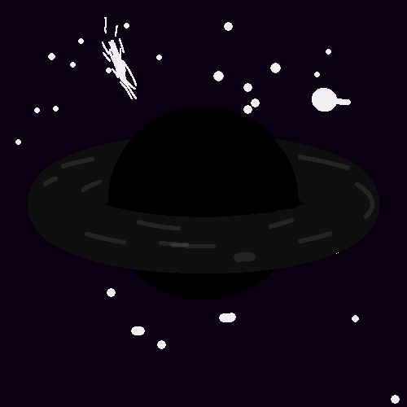

Hi there! This is LuaC, a project written in Lua, hosted on GitHub by ehekufa. Grab the source below and give it a try.
If you get stuck or find a bug, open a ticket in the issue tracker.
The source can be found on GitHub.
It's pretty easy to get started, just check out these snippets.
git clone https://github.com/ehekufa/LuaC cd LuaC
git checkout arena/b210b158-luac
See the repository for the full documentation.